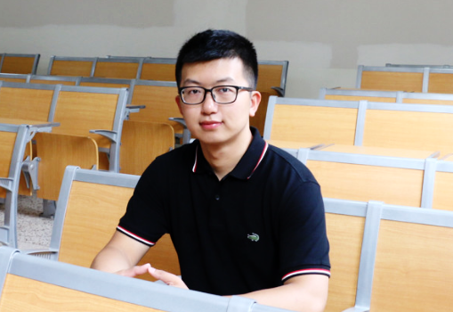

I am a four-year bachelor-straight-to-PhD student in State Key Laboratory of Transducer Technology, Institute of Electronics, Chinese Academy of Sciences. I am also a joint PhD student in Institute of Automation, Chinese Academic of Sciences under the advisement of Prof. Junliang Xing. And I am currently a research intern in Sensetime. Before that, I received the B. Eng degree from College of Electrical and Information Engineering in Hunan University of China in 2015.
My research interest includes machine learning and pattern recognition, with a focus on object detection, face detection and pedestrian detection.